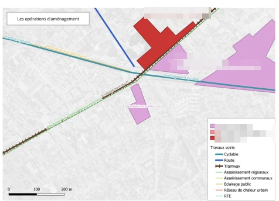
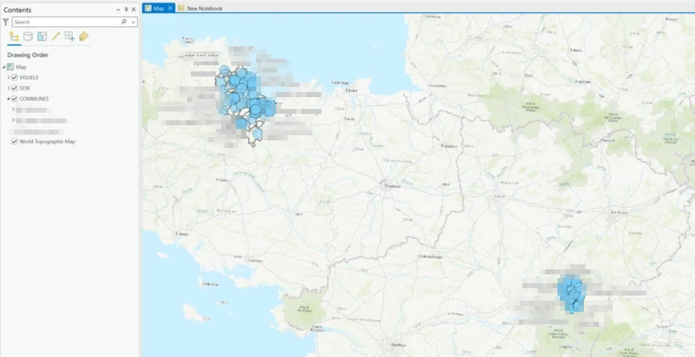
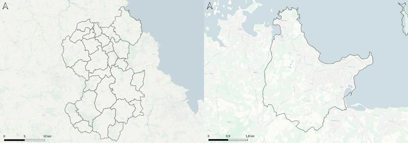
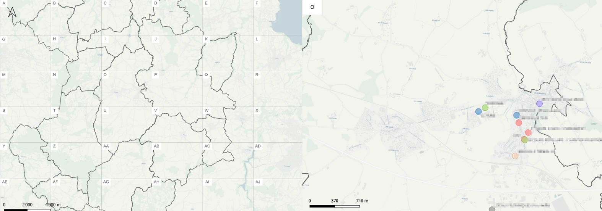
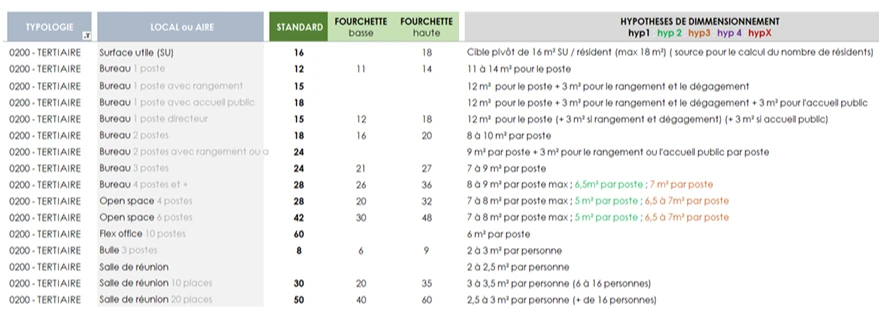

Expériences en ingénierie et conseil
Deux stages chez Egis : coordination de projet urbain à Montreuil en 2026, données de patrimoine bâti à Nantes en 2025
Les noms de clients et de bâtiments sont floutés. Le fond de plan, public, reste lisible.
Stage de fin d’études · mars à août 2026
Egis, Montreuil
Stage en assistance à maîtrise d’ouvrage, en ordonnancement, pilotage et coordination (OPCU, OPCIC) : suivre et coordonner les chantiers de deux quartiers en renouvellement urbain.
1Suivi et coordination d’opérations en renouvellement urbain
Objectif
Suivre deux quartiers en renouvellement urbain et leurs opérations, portées par des maîtres d’ouvrage différents : tenir le calendrier d’ensemble, gérer les interfaces entre chantiers voisins et anticiper ce qui peut ralentir le projet, conflits d’emprise comme procédures.
Pas de capture pour cette mission. Les plannings détaillés et les comptes rendus ne peuvent pas être montrés. Les plans de phasage, qui en donnent une vue d’ensemble, sont présentés juste en dessous.
Mon rôle
Suivi du phasage : plans sous QGIS, plannings sous MS Project, repérage des conflits d’interface sur les plans d’installation de chantier, scénarios de calendrier pour débloquer les opérations. Préparation des comités techniques mensuels, dont un co-animé, comptes rendus et rapports de visite, échanges avec les collectivités, les aménageurs et les entreprises.
Ce que j’ai construit à côté
Les deux outils de suivi de l’équipe, présentés à la réalisation 3 : un outil de visite de site et un planning automatisé.
Outils
2Cartographie de phasage de chantiers (OPCIC)
Objectif
Visualiser le phasage des chantiers d’un secteur dans le temps : emprises, installations, circulations, accès. En réunion de coordination, chaque acteur veut savoir ce qui va se passer autour de son chantier, et un planning de plusieurs centaines de lignes ne répond pas à cette question.

Pleine résolution ↗
L’outil en place
Les emprises sont dessinées une seule fois sous QGIS et reliées aux opérations du planning MS Project par une base de données. Quand le planning bouge, on relance la chaîne au lieu de tout redessiner, et un plan de phasage sort en une quinzaine de minutes.
Mon rôle
Production des plans de phasage sur mes deux secteurs, et pour des collègues sur les leurs. Appui SIG (systèmes d’information géographique) sur cette chaîne, que je n’ai pas construite : j’ai aidé des collègues moins à l’aise avec le SIG à régler leurs problèmes d’affichage, de liens et de mise en page, et les écarts entre le planning et la carte.
Outils
3Outil de visite de site et planning automatisé
Le problème de départ
Une visite prenait une demi-heure sur place, puis trois quarts d’heure à une heure au bureau pour trier les photos et rédiger de mémoire. Aucune localisation précise, aucun suivi d’une visite à l’autre.

Pleine résolution ↗
Mon rôle
Outil conçu de bout en bout : quatre pistes comparées, puis Survey123 retenu après un test sur site. J’ai construit le formulaire, avec un statut ouvert, fermé ou rappel pour suivre chaque observation, et le modèle de rapport Word qui remplace le montage à la main.
L’analyse automatique
Trois consignes que j’ai rédigées pour une IA lui font analyser les photos et le commentaire audio, rédiger l’observation, proposer une action et tenter d’identifier le maître d’ouvrage. C’est une première rédaction, à reprendre à la main sur les cas particuliers.
Ce que ça change
Une dizaine de minutes au bureau au lieu de trois quarts d’heure à une heure. En contrepartie, la visite s’allonge d’une dizaine de minutes. Ce sont des ordres de grandeur estimés à l’usage, pas un chronométrage.
Ce qui n’a pas abouti
Le rattachement automatique de chaque constat à une opération du planning, faute de temps. Et l’analyse automatique ne marche qu’en ligne, pas sur un site sans réseau.
Outils
Second outil : le planning de synthèse
Indépendant de l’outil de visite, un planning Excel de synthèse qui se remplit tout seul depuis la base du projet, là où il fallait relire un Gantt de plusieurs centaines de lignes. Mis à jour en 2 minutes au lieu d’une heure, et transposable d’un secteur à l’autre.
Outils
4Repérage cartographique d’opérations autour d’un projet de transport
Objectif
Recenser et localiser l’ensemble des opérations (projets immobiliers, travaux de voirie et de réseaux, ouvrages de transport) le long du tracé, pour identifier les secteurs à forts enjeux de coordination.

Pleine résolution ↗

Pleine résolution ↗
Mon rôle
Reconstitution des emprises à partir de données incomplètes, recherches complémentaires (arrêtés, plans publiés), structuration des couches, cartes de synthèse et zooms sectoriels.
Outils
5Cartographie d’un projet de renouvellement urbain
Objectif
Représenter un quartier en renouvellement urbain (structure, équipements, flux de circulation, interfaces avec les chantiers voisins) pour appuyer un dossier de candidature.

Pleine résolution ↗
Mon rôle
Recherche de l’information dans plusieurs documents du projet, puis construction des couches, choix de la symbologie et mise en page.
La difficulté
Trier. La documentation contenait bien plus qu’une carte ne peut porter : il fallait retenir ce qui montre comment le quartier fonctionne, laisser le reste, et tout représenter sans alourdir la lecture.
Outils
Stage de 4e année · avril à août 2025
Egis, Nantes
Stage SIG en conseil immobilier et énergétique, sur les schémas directeurs immobiliers et énergétiques (SDIE) : concevoir l’outil qui met en cartes le diagnostic des bâtiments publics d’une collectivité.
6Outil cartographique automatisé, patrimoine bâti
Objectif
Transformer automatiquement le diagnostic d’un parc de bâtiments, tenu sous Excel, en cartes remises à la collectivité. Un même outil pour tous les schémas directeurs, jusqu’à 300 bâtiments chacun, et une méthode que l’équipe puisse relancer sans moi.
Captures partielles. Le cœur du travail, les scripts Python, ne se photographie pas, et l’accès aux fichiers a pris fin avec le stage.
La chaîne, étape par étape
Relier le diagnostic aux bâtiments
Les adresses fournies ne suffisaient pas à placer les bâtiments sur la carte. J’ai rattaché chacun à son identifiant officiel (Référentiel National des Bâtiments), ce qui a rendu tout le reste possible.
Automatiser la fabrication des couches
Des scripts Python fabriquent les couches et leur mise en forme, pour n’importe quel schéma directeur. Quand le diagnostic change, une macro Excel et un script remettent les cartes à jour.
Publier en ligne
Les couches rejoignent une base commune à tous les schémas directeurs, puis ArcGIS Online. Le client reçoit le lien d’une carte consultable en ligne. Il a fallu pour cela harmoniser le fichier Excel du diagnostic, qui changeait de l’un à l’autre.

Pleine résolution ↗

Pleine résolution ↗
Exporter en images, à la bonne échelle
Une même mise en page ne convient pas à une commune seule et à une vingtaine. Plusieurs scripts d’export laissent le choix : une carte par bâtiment, par commune, par quartier, ou une grille pour les grands périmètres.

Pleine résolution ↗

Pleine résolution ↗
Laisser l’outil utilisable sans moi
Deux guides pour des collègues qui ne pratiquent pas QGIS, et une méthode manuelle en secours. L’équipe les a testés sur des schémas directeurs en cours, je les ai corrigés d’après ses retours.
Outils
7Référentiel de dimensionnement de surfaces
Objectif
Donner à l’équipe un référentiel de surfaces types, réutilisable, pour harmoniser le dimensionnement des futurs projets de programmation au lieu de repartir des mêmes questions à chaque fois.

Pleine résolution ↗
Mon rôle
Mission confiée par un collègue programmiste, en parallèle de la mission principale. J’ai listé les locaux à dimensionner par typologie (tertiaire, scolaire, stationnement…), puis rassemblé les règles des référentiels internes qui m’ont été transmis.
La difficulté
Là où aucune règle n’existait, les programmes déjà réalisés donnaient des surfaces, pas les hypothèses qui les justifient. J’en ai dégagé des tendances pour poser mes propres hypothèses, chacune avec une valeur standard et une fourchette.
Outils
Une question sur l’une de ces réalisations ?
Je peux détailler la méthode, les données mobilisées ou la chaîne de traitement.